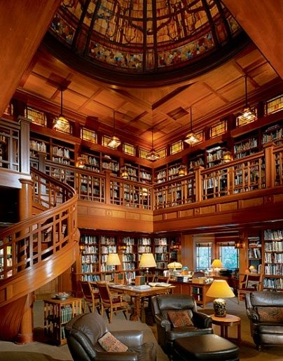

Bajas a la biblioteca...
Un misterio por conocer
Capítulo 3: Que misterio hay

Qué es esto
El apellido de esa familia era el mismo que el de Valeria.
Paco sintió que el suelo desaparecía bajo sus pies.
¿Había confiado en la persona equivocada?
Pero recordó su mirada sincera. Tal vez había una explicación. Tal vez no todo era tan simple.